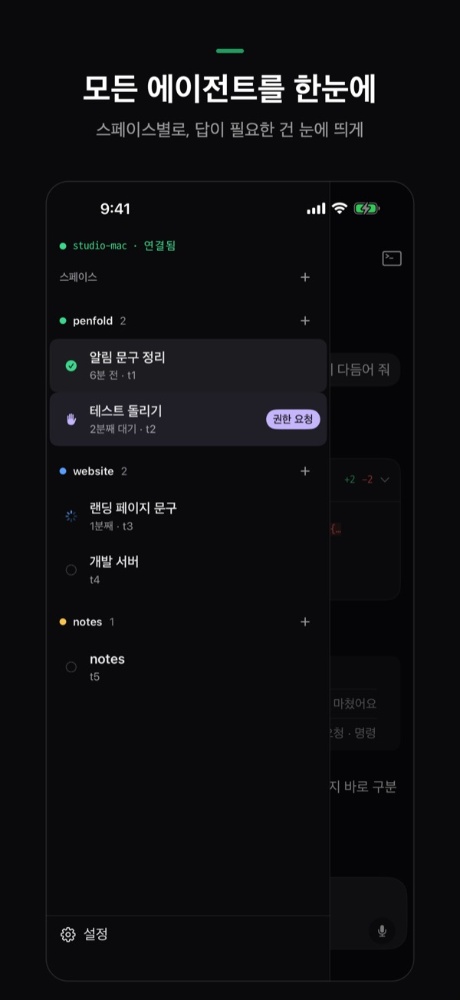
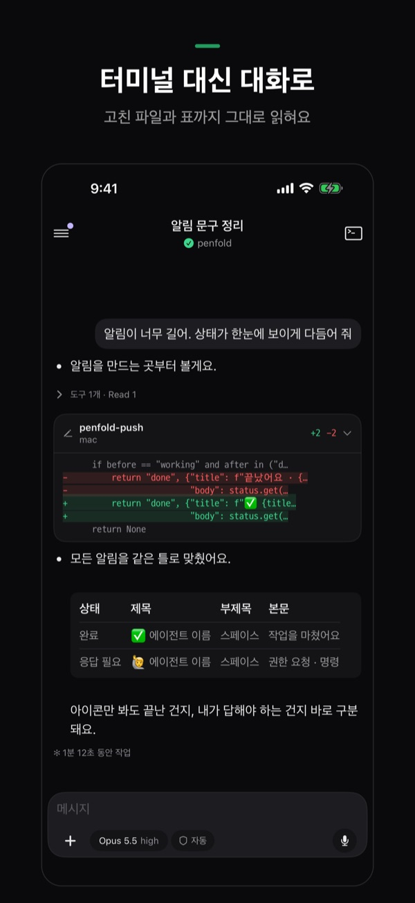
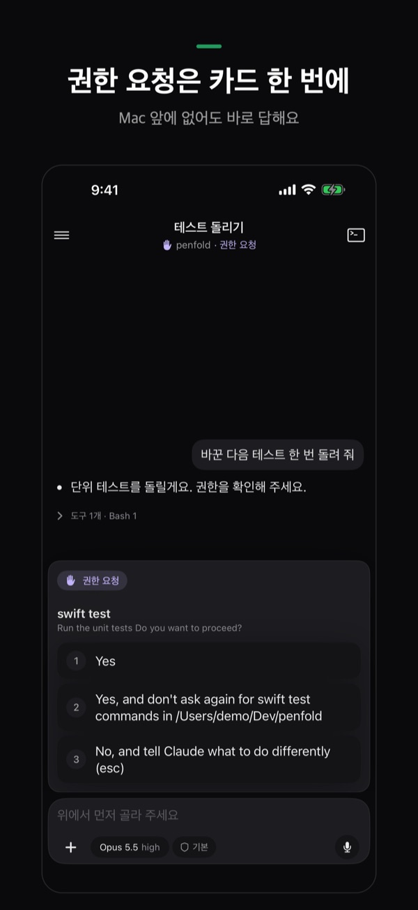
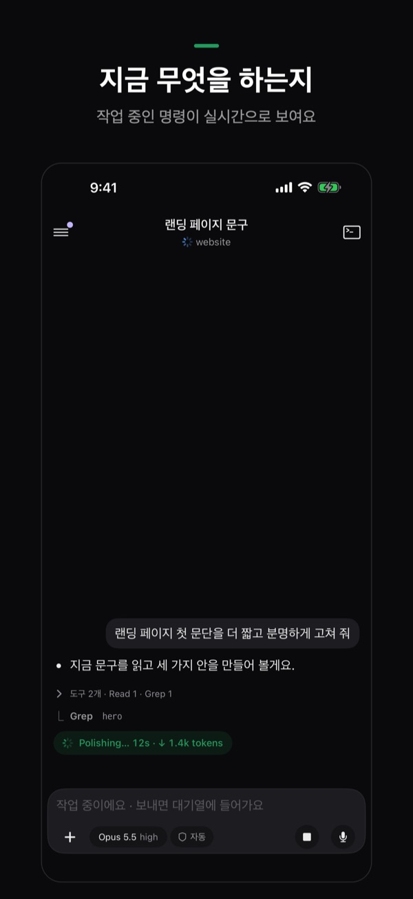
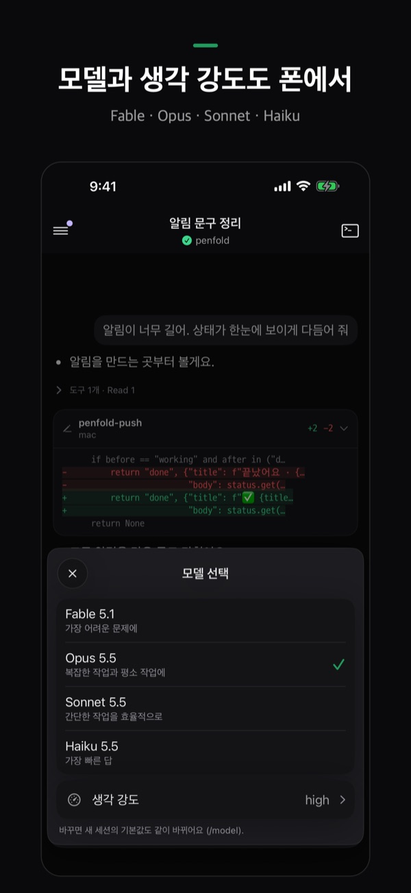

Penfold
Mac에서 일하는 코딩 에이전트(Claude Code, Codex)를 iPhone에서 보고, 답하고, 새로 시작해요.
에이전트는 책상 위 Mac에서 계속 일하게 두고, 어떤 게 끝났는지, 어떤 게 내 답을 기다리는지 폰으로 보고 그 자리에서 답해요. iPhone은 Tailscale을 거쳐 SSH로 Mac에 직접 연결해요.
iPhone 앱은 App Store 출시를 준비하고 있어요.





Herdr 전용이에요. Penfold는 Herdr 안에서 실행한 에이전트만 보여요. 터미널 앱이나 iTerm에서 바로 띄운 claude·codex는 보이지 않으니, Herdr의 탭에서 시작하거나 Penfold의 ＋로 새로 시작하세요. macOS 전용이고, Mac이 켜져 있어야 해요.
할 수 있는 것
어떻게 연결되나요
중간에 Penfold 서버가 없어요. SSH 키는 iPhone에서 만들어 Keychain에 두고, Mac의 호스트 키는 연결할 때 고정해요.
준비물
- 자리를 비울 때도 깨어 있는 Mac(macOS) — 전원에 연결해 두세요
- Herdr, 그리고 설치·로그인된 Claude Code 또는 Codex
- Mac과 iPhone 둘 다 Tailscale, 같은 계정
Mac 준비
Mac 터미널에 아래 한 줄을 붙여 넣으세요. 하나씩 확인하고 없는 건 설치를 도와요(설치 전에는 항상 물어봐요).
curl -fsSL https://raw.githubusercontent.com/SihyunAdventure/penfold-mac/main/setup | zsh- 개발자 도구(python3)
- Tailscale — 설치·로그인·켜기
- 원격 로그인(SSH)
- Herdr, 그리고 Claude Code나 Codex 확인
- 알림 — 에이전트가 일하는 동안 Mac이 잠들지 않게 해요
- iPhone 연결 — 터미널에 QR이 떠요
iPhone 연결
- iPhone에서 Tailscale을 켜요.
- Mac 터미널의 QR을 iPhone 기본 카메라로 찍어요.
- Penfold가 열리면 연결을 눌러요.
Mac이 없다면 앱 첫 화면의 Mac 없이 둘러보기로 모든 화면을 예시와 함께 써 볼 수 있어요.
자주 묻는 것
에이전트가 목록에 안 보여요. Herdr 안에서 실행한 것만 보여요. 일반 터미널에서 띄운 에이전트는 Herdr 탭에서 다시 시작하세요. Mac에 Claude Code나 Codex가 설치·로그인돼 있어야 해요.
Mac에 연결이 안 돼요. iPhone과 Mac 모두 Tailscale이 켜져 있고 같은 계정인지, Mac이 잠자기 상태가 아닌지 확인하세요. 앱의 설정 › 연결 상태가 어느 단계에서 막혔는지 보여 줘요.
알림이 안 와요. 설정 › 알림 카드에서 이 iPhone 허용, Mac의 알림 데몬, 등록 상태를 확인하고 시험 알림을 보내 보세요.
제 코드나 대화가 어딘가로 가나요? 아니요. 앱은 내 Mac과만 직접 통신해요. 자세한 내용은 개인정보처리방침을 보세요.
문의
문제나 제안은 GitHub Issues에 남겨 주세요.